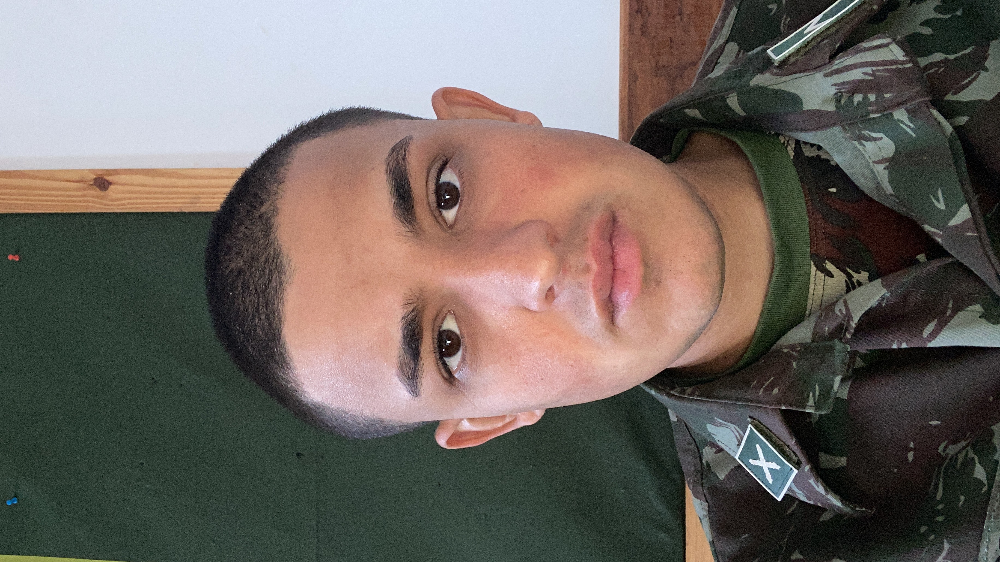

Sou estudante de Análise e Desenvolvimento de Sistemas na UNIASSELVI (jan/2026 – ago/2028), atualmente em transição de carreira após 4 anos de experiência no Exército Brasileiro, onde desenvolvi disciplina, responsabilidade, organização e trabalho sob pressão. Busco minha primeira oportunidade como Desenvolvedor Júnior ou Estagiário em Tecnologia, onde eu possa aplicar meus conhecimentos técnicos e continuar evoluindo profissionalmente. Estou aberto a conexões e oportunidades na área de desenvolvimento.